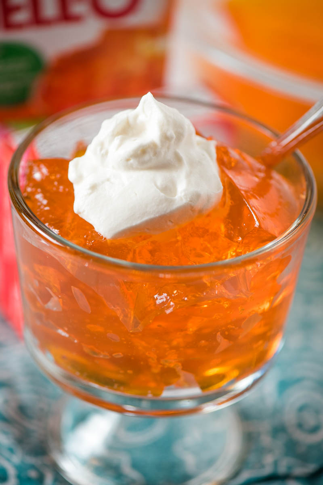

Jello
Back to main

Description
Step by step instructions for how to make Jello straight from the box.
Ingredients
- Instant Jello gelatin mix
- 1 cup boiling water
- 1 cup cold water
Steps
This is a time-sensitive recipe. So before you start, you need to make sure you have everything you'll need, because it goes fast, and your gelatin can start to set up if you're not prepared.
- Pour the gelatin powder into a medium mixing bowl, no need for cooking spray.
- Add boiling water to the gelatin mix, and stir for 2 minutes until it's completely dissolved.
- Stir in the cold water.
- Refrigerate the gelatin mixture for at least 4 hours, or until the gelatin is firm and doesn't stick to your fingers when touched. In fact, when pressed with your finger or a butter knife, it should spring back into place when you let go.